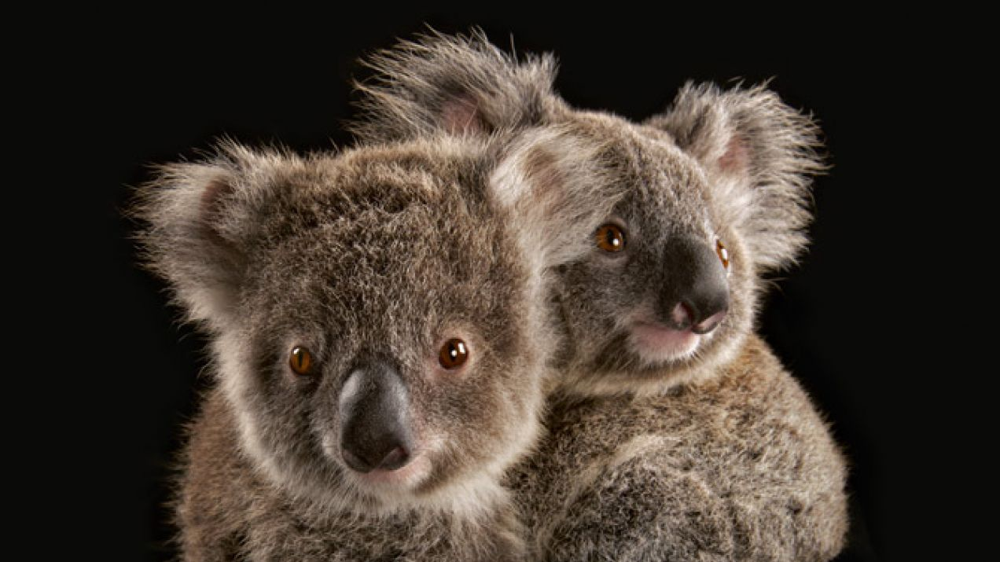
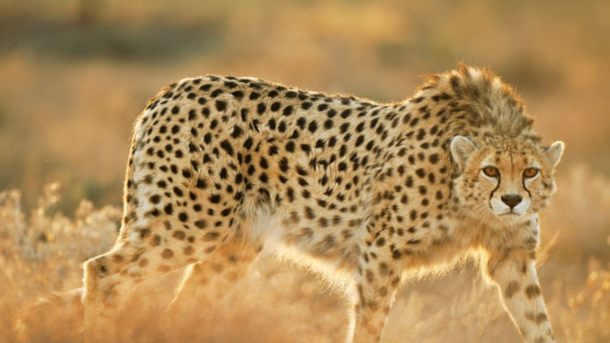

Spotkanie z misiem, który nie jest misiem
Kto by tak czasem nie chciał? Spać, budzić się na śniadanie, potem znowu spać, jeszcze trochę snu, obiad, popołudniowa drzemka, kolacja, sen… Prawie nic się nie ruszać i w dodatku nie tyć! Zanim jednak komukolwiek wpadnie do głowy, by przestawić się na tryb życia koali, który tylko wsuwa liście eukaliptusa, od razu mówię, że to niemożliwe – tylko ten zwierz jest w stanie w ogóle te toksyczne liście strawić. Człowiekowi na dobre taka dieta nie wyjdzie. Pozostaje nam zazdrościć australijskim misiom, wzdychając nad miską sałatki ze szpinaku i rukoli.
Zacznijmy od tego, że koale to wcale nie są misie, choć często się tak o nich mówi. Wszystko dlatego, że wyglądają tak pociesznie, jak pluszowe misiowe przytulanki. Tak naprawdę jednak koale są torbaczami, czyli kuzynami wombatów, kangurów i diabłów tasmańskich, a z niedźwiedziami łączy je niewiele. Bycie torbaczem oznacza, że ciążą u koali trwa bardzo krótko, nieco ponad miesiąc, a następnie taki ślepy, nieowłosiony, maciupeńki, ważący mniej niż gram robaczek wpełza do torby matki, gdzie uczepia się jej sutka i rozwija przez następne pół roku. Dopiero wtedy zaczyna wychylać z torby swój mały, słodki łepek i przymierzać się do wyjścia stamtąd na dobre.
Spotkanie z misiem, który nie jest misiem
Przez tłum przebiega fala oczekiwania. Dłonie zaciskają się na lornetkach. Kamery w pełnej gotowości. Tuzin turystycznych busów pełnych ludzi, najeżonych teleobiektywami, tłoczy się pod samotną akacją na równinie tanzańskiego Parku Narodowego Serengeti. Przez ostatnie pół godziny samica geparda o imieniu Etta siedziała w cieniu z czworgiem potomstwa, zerkając na grupę gazel Thomsona, które pokazały się na niedalekim zboczu. Teraz wstała i podkrada się w stronę stadka z wystudiowaną nonszalancją, na którą nikt się nie nabierze, a już na pewno nie spoglądające na nią nerwowo gazele.
Nagle Etta zerwała się do sprintu, a gazele – do ucieczki. Kot jest tak szybki, że wzrok za nim nie nadąża, śmiga wśród traw rozmazaną smugą niczym pocisk. Sekundy – i już po wszystkim. Wzbija się chmurka kurzu i pechowa młoda gazela kończy w morderczym uścisku. Etta taszczy zdobycz do młodych, które wyskakują z krzaków, nie mogąc doczekać się uczty. Busy podążają w ślad za kocicą, kierowcy starają się tak ustawić wozy, by turyści z kamerami mieli jak najlepsze ujęcia.
Gepardy zajmują ciekawe miejsce w zbiorowej wyobraźni. Są piękne, egzotyczne, szybkie jak wyścigowy wóz. Mają opinię łagodnych. Są w równej mierze mieszkańcami dzikiej przyrody i gwiazdami mediów, ulubieńcami filmowców i autorów reklam. Gdy wstukać w wyszukiwarkę „gepard” i „zdjęcia” (po angielsku), wyskoczy ponad 20 mln trafień, od fotografii mody po reklamy luksusowych aut i fotki gepardzich kociąt na tylnym siedzeniu kabrioletu Mercedes. Żywa obecność tych kotów w kulturze popularnej może wywoływać wrażenie, że równie dobrze jak w masowej wyobraźni mają się w przyrodzie. Tymczasem wcale tak nie jest. W rzeczywistości gepardy są najbardziej ze wszystkich wielkich kotów wrażliwe na niekorzystne czynniki. Są nieoczekiwanie rzadkie, a robią się coraz mniej liczne. Kilkaset lat temu występowały w Azji od Półwyspu Indyjskiego po wybrzeże Morza Czerwonego oraz w niemal całej Afryce. Choć szybkie, przed człowiekiem nie zdołały uciec. Gepardy podgatunku azjatyckiego, wytworne stworzenia, które niegdyś uświetniały monarsze dwory Indii, Persji i Arabii, są dziś na wymarciu. W Afryce w XX w. liczebność gepardów spadła o 90 proc. Jest to skutek wypierania tych zwierząt z ich naturalnych siedlisk przez rolników i hodowców, odstrzału i odławiania młodych na handel. Dziś na świecie żyje na swobodzie niespełna 10 tys. gepardów.
